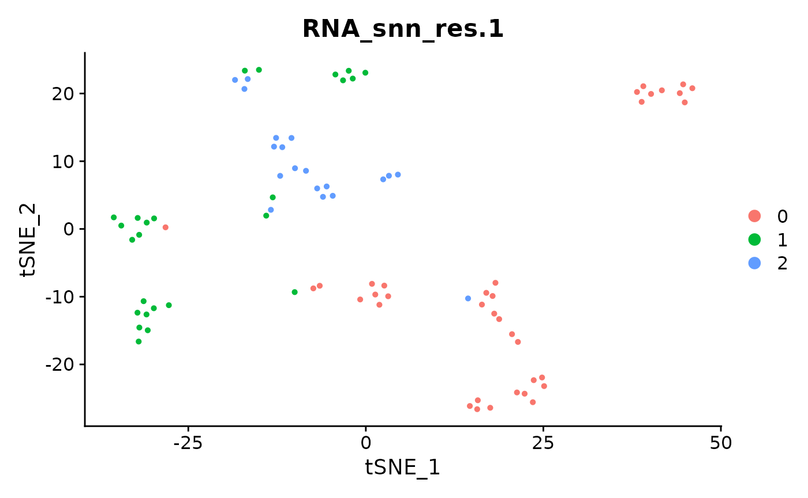
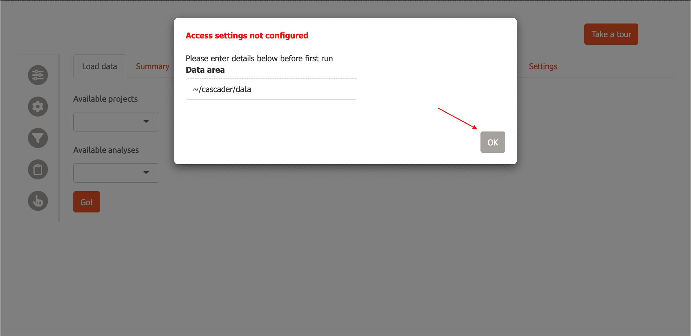
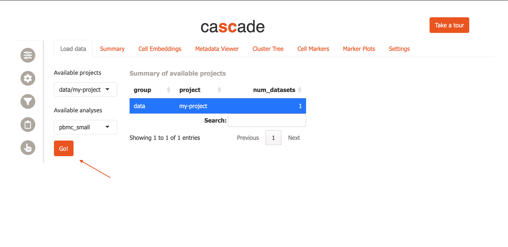
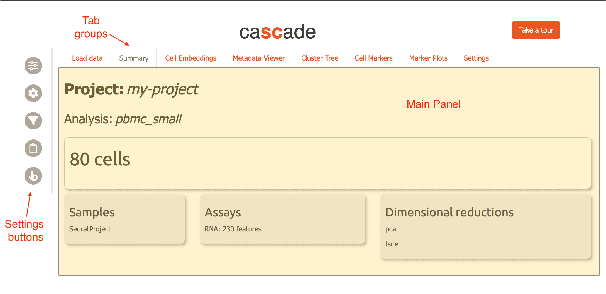
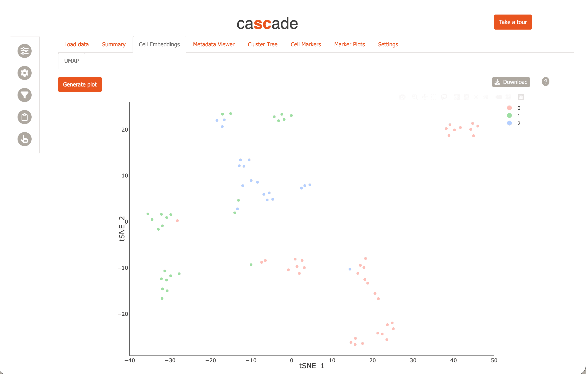
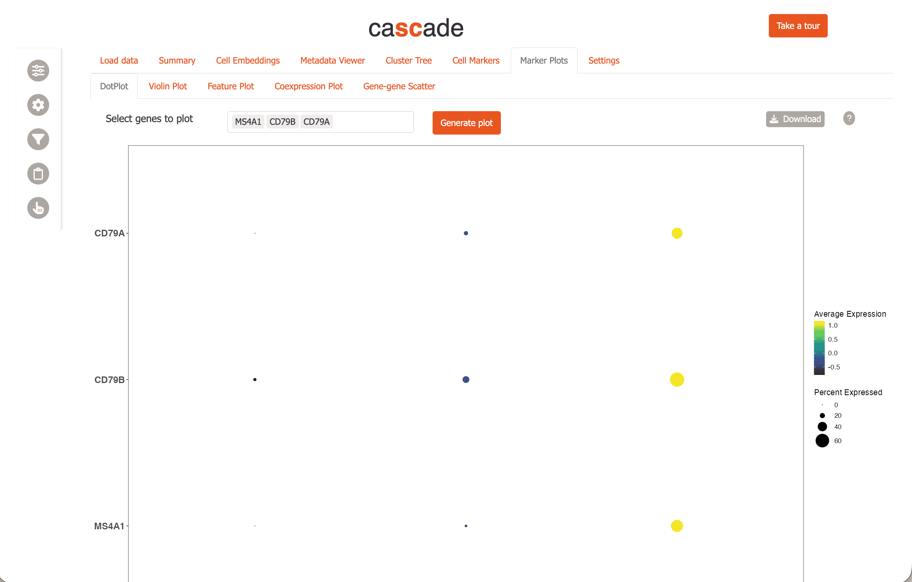
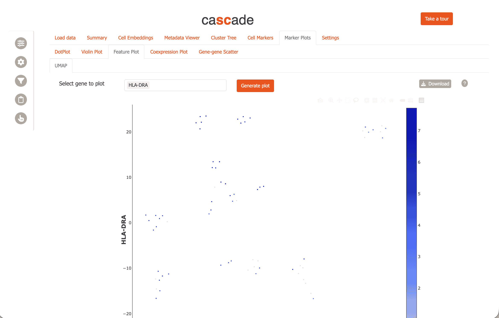
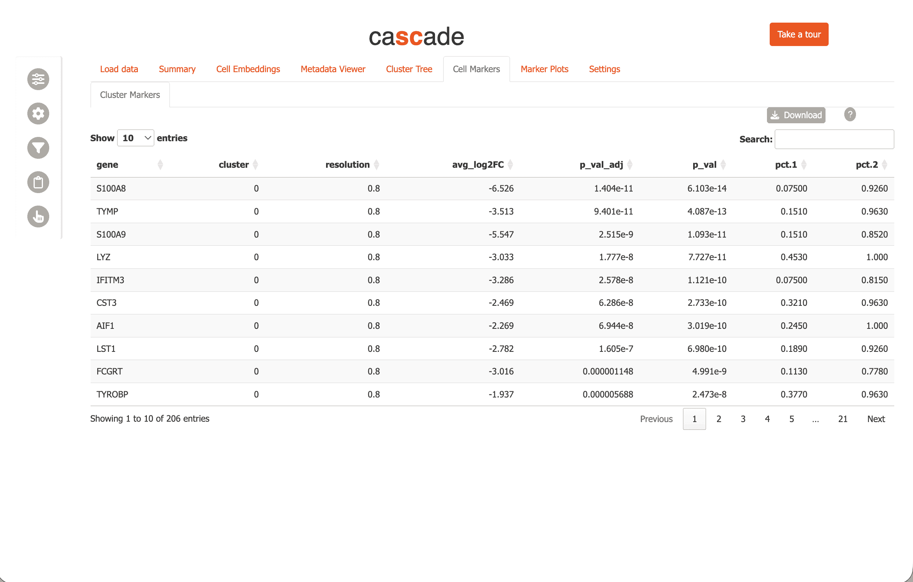

Abstract
cascadeR is an interactive & modular Shiny app
that simplifies and transforms complex single-cell RNA-Seq and
spatial transcriptomics data using numerous interactive features.
Designed for both computational and experimental biologists,
cascadeR supports both R and python ecosystems,
making data exploration and accessible, while also providing a
platform to manage multiple datasets either locally or on a server
to share with collaborators (package version: 0.99.0).
Install cascadeR
Install cascadeR from Bioconductor using
BiocManager::install.
# first check to see if BiocManager is available
if(!requireNamespace('BiocManager', quietly=TRUE)){
install.packages('BiocManager')
}
BiocManager::install('cascadeR')Get example data
Now we load a small dataset with 80 cells and 230 features. It contains two dimension reductions: pca and tsne.
library(Seurat)
#> Loading required package: SeuratObject
#> Loading required package: sp
#> 'SeuratObject' was built under R 4.6.0 but the current version is
#> 4.6.1; it is recomended that you reinstall 'SeuratObject' as the ABI
#> for R may have changed
#>
#> Attaching package: 'SeuratObject'
#> The following objects are masked from 'package:base':
#>
#> intersect, t
data("pbmc_small", package="SeuratObject")
pbmc_small
#> An object of class Seurat
#> 230 features across 80 samples within 1 assay
#> Active assay: RNA (230 features, 20 variable features)
#> 3 layers present: counts, data, scale.data
#> 2 dimensional reductions calculated: pca, tsneInspect the metadata
Next, let’s take a look at the metadata of this object.
head(pbmc_small)
#> orig.ident nCount_RNA nFeature_RNA RNA_snn_res.0.8
#> ATGCCAGAACGACT SeuratProject 70 47 0
#> CATGGCCTGTGCAT SeuratProject 85 52 0
#> GAACCTGATGAACC SeuratProject 87 50 1
#> TGACTGGATTCTCA SeuratProject 127 56 0
#> AGTCAGACTGCACA SeuratProject 173 53 0
#> TCTGATACACGTGT SeuratProject 70 48 0
#> TGGTATCTAAACAG SeuratProject 64 36 0
#> GCAGCTCTGTTTCT SeuratProject 72 45 0
#> GATATAACACGCAT SeuratProject 52 36 0
#> AATGTTGACAGTCA SeuratProject 100 41 0
#> letter.idents groups RNA_snn_res.1
#> ATGCCAGAACGACT A g2 0
#> CATGGCCTGTGCAT A g1 0
#> GAACCTGATGAACC B g2 0
#> TGACTGGATTCTCA A g2 0
#> AGTCAGACTGCACA A g2 0
#> TCTGATACACGTGT A g1 0
#> TGGTATCTAAACAG A g1 0
#> GCAGCTCTGTTTCT A g1 0
#> GATATAACACGCAT A g1 0
#> AATGTTGACAGTCA A g1 0There are two columns with standard quality control metrics:
- nCount_RNA
- nFeature_RNA
In addition, there are two columns with cell clusters calculated at two resolutions. Higher resolutions correspond to more/smaller cell clusters.
- RNA_snn_res.0.8: resolution = 0.8, 2 clusters
- RNA_snn_res.1: resolution = 1, 3 clusters
We visualize the resolution = 1.0 clustering using
Seurat::DimPlot:
Seurat::DimPlot(pbmc_small, group.by='RNA_snn_res.1')
Marker detection
Next, we calculate gene markers to characterize individual clusters
for one of the resolutions using the Seurat::FindAllMarkers
function. Setting Idents() here to
RNA_snn_res.0.8 sets the cell groups to clusters at
resolution = 0.8.
Idents(pbmc_small) <- pbmc_small$RNA_snn_res.0.8
df <- FindAllMarkers(pbmc_small)
#> Calculating cluster 0
#> For a (much!) faster implementation of the Wilcoxon Rank Sum Test,
#> (default method for FindMarkers) please install the presto package
#> --------------------------------------------
#> install.packages('devtools')
#> devtools::install_github('immunogenomics/presto')
#> --------------------------------------------
#> After installation of presto, Seurat will automatically use the more
#> efficient implementation (no further action necessary).
#> This message will be shown once per session
#> Calculating cluster 1Now we have marker genes for each of the clusters at this resolution.
head(df)
#> p_val avg_log2FC pct.1 pct.2 p_val_adj cluster gene
#> S100A8 6.102871e-14 -6.525729 0.075 0.926 1.403660e-11 0 S100A8
#> TYMP 4.087494e-13 -3.512621 0.151 0.963 9.401236e-11 0 TYMP
#> S100A9 1.093387e-11 -5.546585 0.151 0.852 2.514790e-09 0 S100A9
#> LYZ 7.726663e-11 -3.033164 0.453 1.000 1.777132e-08 0 LYZ
#> IFITM3 1.120932e-10 -3.285522 0.075 0.815 2.578143e-08 0 IFITM3
#> CST3 2.732858e-10 -2.469198 0.321 0.963 6.285574e-08 0 CST3We often like to compare different resolutions, so let’s do the same
for resolution = 1.0.
Idents(pbmc_small) <- pbmc_small$RNA_snn_res.1
df2 <- FindAllMarkers(pbmc_small)
#> Calculating cluster 0
#> Calculating cluster 1
#> Calculating cluster 2You can combine multiple such marker gene tables for use with
cascadeR to compare, e.g. different resolutions, “assays”
or arbitrary “groups”. To do this, we concatenate our two marker gene
sets and add a “resolution” column.
df$resolution <- '0.8'
df2$resolution <- '1.0'
marker_df <- rbind(df, df2)Save results
Next, we save our results.
saveRDS(pbmc_small, 'seurat_pbmc_small.Rds', compress=FALSE)
write.table(marker_df, 'allmarkers_combined.tsv', sep='\t', row.names=FALSE, quote=FALSE)Data Organization
Next, we need to organize your data in a directory structure that
cascadeR can easily navigate, e.g. in a folder
cascader/data in your home directory. The folder should
look something like this:
~/cascader/data/
└─ my-project
└─ pbmc_small
├─ clustered.Rds
└─ allmarkers.tsvTwo things to note here:
Projects are subfolders in the data area, while analyses are subfolders within projects. For instance, in the above example,
my-projectis the project name andpbmc_smallis the analysis name. This 2-level hierarchy allows us to have multiple analyses using, e.g different analysis parameters, within a single project.-
cascadeRuses file extensions, e.g..Rdsor.h5ad, to figure out what data to read. You can have two kinds of files in an analysis folder:-
Pre-processed single-cell/spatial object
-
.Rds(Seurat or SingleCellExperiment) -
.h5ad(anndata)
-
-
Marker tables:
.tsvor.csv-
Marker genes for a cluster (compared to everything else).
- Output from Seurat’s
FindMarkersorFindAllMarkersor scanpy’ssc.tl.rank_genes_groupsare supported. - Filenames must contain the string allmarkers.
- Output from Seurat’s
-
Conserved marker genes across samples.
- Output from Seurat’s
FindConservedMarkers. - Filenames must contain the string consmarkers.
- Output from Seurat’s
-
Differential expression analysis, from comparing cell clusters or from pseudo-bulk analysis.
- Output from Seurat’s
FindMarkersor pseudo-bulk analysis fromDESeq2are supported. - Filenames must contain the string demarkers.
- Output from Seurat’s
Marker gene tables supports special columns, “resolution”, “assay”, “group” to combine multiple sets of results for joint viewing.
If multiple marker gene tables of a particular type are found in the same analysis folder, they are concatenated together with the file name encoded in the “group” column.
-
-
First Run
Load the cascadeR package.
CascadeR allows you to download interactive plots as PDF. To use this functionality you need to install some required Python dependencies:
install_cascade() # Installs plotly and kaleido for PDF exportNow, run the app:
To run on a fixed port, e.g. when using remote servers with SSH port
forwarding, specify port within a list of options.
run_cascade(options=list(port=12345, launch.browser=FALSE))Then access cascadeR by opening the URL:
http://127.0.0.1:12345
Set up cascadeR analysis
We provide a helper function to set up a dataset while following cascadeR’s specifications. Let’s use this now for the analysis we just performed.
First we create a data directory for cascadeR.
dir.create('~/cascader/data', recursive=TRUE)Next, we run add_cascade_analysis with the RDS file and
marker table path specified. By default, this function prints out the
commands to be run - to actually run them, we use
execute = TRUE.
add_cascade_analysis(
obj_path='seurat_pbmc_small.Rds',
data_dir='~/cascader/data',
project='my-project',
analysis='pbmc_small',
cluster_markers='allmarkers_combined.tsv',
execute=TRUE
)
#>
#> - Data directory:"~/cascader/data" already exists
#>
#> - Project directory:"~/cascader/data/my-project" does not exist. Creating it
#>
#> mkdir -p ~/cascader/data/my-project
#> - Analysis directory "~/cascader/data/my-project/pbmc_small" does not exist, creating it
#>
#> mkdir -p ~/cascader/data/my-project/pbmc_small
#> Setting up project:
#> ln -s /home/runner/work/cascadeR/cascadeR/vignettes/seurat_pbmc_small.Rds ~/cascader/data/my-project/pbmc_small/seurat_pbmc_small.Rds
#> ln -s /home/runner/work/cascadeR/cascadeR/vignettes/allmarkers_combined.tsv ~/cascader/data/my-project/pbmc_small/allmarkers.tsv
#>
#> All done! Remember to add "~/cascader/data" to Cascade data areas to view new analysisInitial setup
The first time you run cascadeR, you will be asked to specify where
your data is located with a modal dialog. Enter the folder where you
saved the RDS file, ~/cascader/data, then click ‘OK’.

Now cascadeR will automatically refresh and you will see
data/my-project in the “Available Projects” menu, and
pbmc_small in the “Available Datasets”. You can click on
the table directly or choose from the dropdown menu to select the
dataset. Now click ‘Go’ to load the data.

Now carnation will load the pbmc data and switch to the “Summary” tab.
General layout
The interface of CascadeR consists of a main central panel for content, a sidebar containing settings and ‘Gene scratchpad’ buttons.

Feature overview
Now you can explore the dataset further using cell embeddings, e.g. tSNE.

Visualize marker gene expression using dotplots,

and feature plots

and investigate gene candidates using “Cell Markers” module.

CascadeR provides many more features to allow extensive exploration of single-cell datasets.
- UMAP/spatial cell-embeddings or marker plots support lasso selection to select cells of interest. These selections can be used to create custom filters for the data or downloaded for further analysis.
- Marker tables can be directly clicked to select genes which can then be added to the gene scratchpad and tracked across the whole app.
- Custom filters can be created for cells based on metadata, gene expression or cell selection and save throughout a session.
- All plots can be saved to PDF and marker tables downloaded to TSVs.
For multi-user environments, CascadeR also supports authentication:
# Create user database
credentials <- data.frame(
user = c('shinymanager'),
password = c('12345'),
admin = c(TRUE),
stringsAsFactors = FALSE
)
# Initialize the database
shinymanager::create_db(
credentials_data = credentials,
sqlite_path = 'credentials.sqlite',
passphrase = 'admin_passphrase'
){r run_auth, eval=FALSE) # Run with authentication run_cascade(credentials='credentials.sqlite', passphrase='admin_passphrase')
sessionInfo
sessionInfo()
#> R version 4.6.1 (2026-06-24)
#> Platform: x86_64-pc-linux-gnu
#> Running under: Ubuntu 24.04.5 LTS
#>
#> Matrix products: default
#> BLAS: /usr/lib/x86_64-linux-gnu/openblas-pthread/libblas.so.3
#> LAPACK: /usr/lib/x86_64-linux-gnu/openblas-pthread/libopenblasp-r0.3.26.so; LAPACK version 3.12.0
#>
#> locale:
#> [1] LC_CTYPE=C.UTF-8 LC_NUMERIC=C LC_TIME=C.UTF-8
#> [4] LC_COLLATE=C.UTF-8 LC_MONETARY=C.UTF-8 LC_MESSAGES=C.UTF-8
#> [7] LC_PAPER=C.UTF-8 LC_NAME=C LC_ADDRESS=C
#> [10] LC_TELEPHONE=C LC_MEASUREMENT=C.UTF-8 LC_IDENTIFICATION=C
#>
#> time zone: UTC
#> tzcode source: system (glibc)
#>
#> attached base packages:
#> [1] stats graphics grDevices utils datasets methods base
#>
#> other attached packages:
#> [1] cascadeR_0.99.0 Seurat_5.5.1 SeuratObject_5.4.0 sp_2.2-3
#> [5] BiocStyle_2.40.0
#>
#> loaded via a namespace (and not attached):
#> [1] RcppAnnoy_0.0.23 shinythemes_1.2.0
#> [3] splines_4.6.1 later_1.4.8
#> [5] R.oo_1.27.1 tibble_3.3.1
#> [7] polyclip_1.10-7 fastDummies_1.7.6
#> [9] shinymanager_1.1.0 lifecycle_1.0.5
#> [11] rprojroot_2.1.1 globals_0.19.1
#> [13] lattice_0.22-9 MASS_7.3-65
#> [15] magrittr_2.0.5 plotly_4.12.1
#> [17] sass_0.4.10 rmarkdown_2.32
#> [19] jquerylib_0.1.4 yaml_2.3.12
#> [21] shinyBS_0.65.0 httpuv_1.6.17
#> [23] otel_0.2.0 sctransform_0.4.3
#> [25] askpass_1.2.1 spam_2.11-4
#> [27] spatstat.sparse_3.2-0 reticulate_1.47.0
#> [29] DBI_1.3.0 cowplot_1.2.0
#> [31] pbapply_1.7-5 RColorBrewer_1.1-3
#> [33] abind_1.4-8 Rtsne_0.17
#> [35] GenomicRanges_1.64.0 R.utils_2.13.0
#> [37] purrr_1.2.2 ggraph_2.2.2
#> [39] BiocGenerics_0.58.1 tweenr_2.0.3
#> [41] IRanges_2.46.0 S4Vectors_0.50.2
#> [43] ggrepel_0.9.8 irlba_2.3.7
#> [45] listenv_1.0.0 spatstat.utils_3.2-5
#> [47] goftest_1.2-3 RSpectra_0.16-2
#> [49] spatstat.random_3.5-1 fitdistrplus_1.2-6
#> [51] parallelly_1.48.0 pkgdown_2.2.1
#> [53] codetools_0.2-20 DelayedArray_0.38.2
#> [55] DT_0.34.0 ggforce_0.5.0
#> [57] tidyselect_1.2.1 farver_2.1.2
#> [59] viridis_0.6.5 shinyWidgets_0.9.1
#> [61] matrixStats_1.5.0 stats4_4.6.1
#> [63] spatstat.explore_3.8-2 Seqinfo_1.2.0
#> [65] jsonlite_2.0.0 tidygraph_1.3.1
#> [67] progressr_1.0.0 ggridges_0.5.7
#> [69] survival_3.8-6 systemfonts_1.3.2
#> [71] tools_4.6.1 ragg_1.5.2
#> [73] ica_1.0-3 Rcpp_1.1.2
#> [75] glue_1.8.1 gridExtra_2.3.1
#> [77] SparseArray_1.12.2 xfun_0.61
#> [79] MatrixGenerics_1.24.0 dplyr_1.2.1
#> [81] withr_3.0.3 BiocManager_1.30.27
#> [83] fastmap_1.2.0 clustree_0.5.1
#> [85] openssl_2.4.2 shinyjs_2.1.1
#> [87] digest_0.6.39 R6_2.6.1
#> [89] mime_0.13 textshaping_1.0.5
#> [91] colorspace_2.1-3 scattermore_1.2
#> [93] tensor_1.5.1 RSQLite_3.53.3
#> [95] spatstat.data_3.1-9 anndata_0.8.0
#> [97] R.methodsS3_1.8.2 UpSetR_1.4.1
#> [99] tidyr_1.3.2 generics_0.1.4
#> [101] data.table_1.18.6.1 graphlayouts_1.2.5
#> [103] httr_1.4.9 htmlwidgets_1.6.4
#> [105] S4Arrays_1.12.0 uwot_0.2.5
#> [107] pkgconfig_2.0.3 gtable_0.3.6
#> [109] blob_1.3.0 lmtest_0.9-40
#> [111] S7_0.2.2 SingleCellExperiment_1.34.0
#> [113] XVector_0.52.0 htmltools_0.5.9
#> [115] dotCall64_1.2 bookdown_0.48
#> [117] rintrojs_0.3.4 scales_1.4.0
#> [119] Biobase_2.72.0 png_0.1-9
#> [121] spatstat.univar_3.2-0 knitr_1.52
#> [123] tzdb_0.5.0 reshape2_1.4.5
#> [125] nlme_3.1-169 cachem_1.1.0
#> [127] zoo_1.9-0 stringr_1.6.0
#> [129] KernSmooth_2.23-26 shinycssloaders_1.1.0
#> [131] parallel_4.6.1 miniUI_0.1.2
#> [133] desc_1.4.3 pillar_1.11.1
#> [135] grid_4.6.1 vctrs_0.7.3
#> [137] RANN_2.6.3 promises_1.5.0
#> [139] billboarder_0.5.1 xtable_1.8-8
#> [141] cluster_2.1.8.2 evaluate_1.0.5
#> [143] readr_2.2.0 cli_3.6.6
#> [145] compiler_4.6.1 rlang_1.3.0
#> [147] sortable_0.6.0 future.apply_1.20.2
#> [149] labeling_0.4.3 plyr_1.8.9
#> [151] fs_2.1.0 stringi_1.8.9
#> [153] viridisLite_0.4.3 deldir_2.0-4
#> [155] assertthat_0.2.1 spatstat.geom_3.8-2
#> [157] Matrix_1.7-5 RcppHNSW_0.7.0
#> [159] scrypt_0.1.6 hms_1.1.4
#> [161] patchwork_1.3.2 bit64_4.8.6
#> [163] future_1.75.0 learnr_0.11.6
#> [165] ggplot2_4.0.3 shiny_1.14.0
#> [167] SummarizedExperiment_1.42.0 ROCR_1.0-12
#> [169] igraph_2.3.3 memoise_2.0.1
#> [171] bslib_0.12.0 bit_4.6.0
#> [173] ape_5.8-1